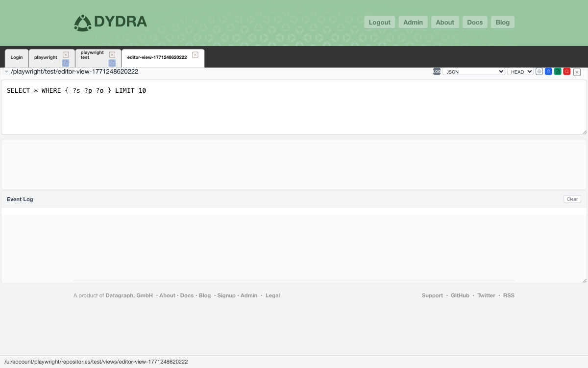
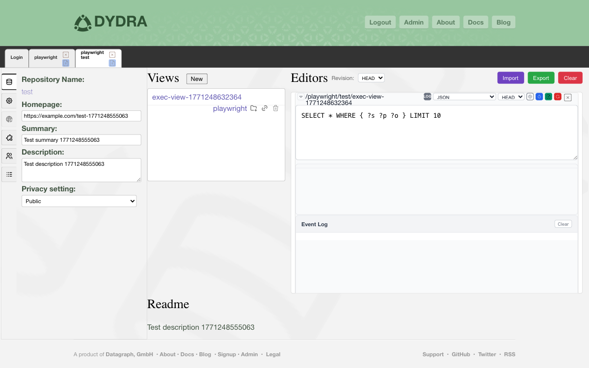

Overview
A view is a saved SPARQL query. Run it against your repository whenever you like. This chapter tells you how to create, edit, execute, and manage views in Dydra Studio.
What a View Is
A view is a named SPARQL query held in your repository. Views let you:
- Keep a query you run often, and reach it quickly
- Share a query with collaborators
- Run one query and take the answer in any of several formats
- Group your queries by repository
Create a View
To create a view:

Figure 1: View creation dialog with view name entered

Figure 2: View creation confirmation popup with instructions
Edit a View in the Repository Pane
Edit a view in the repository pane's own editor list.
Open an Editor in the Repository Pane
Edit the Query Text

Figure 3: View editor in repository pane with SPARQL query text entered
Edit a View in Its Own Pane
Open a view editor in a pane of its own for more room and a clearer desk.

Figure 4: View editor in separate pane with SPARQL query text entered
Execute a View
Execute a view to see what the query answers. Several routes reach the same result.
Execute From the Editor

Figure 5: View editor with query text and output format selected, ready to execute
Output Formats You Can Choose
Take the answer in any of these:
| Format | Media Type | Description |
|---|---|---|
| JSON | application/sparql-results+json |
Structured JSON results (default) |
| XML | application/sparql-results+xml |
XML format results |
| HTML | text/html |
Formatted HTML table |
| CSV | text/csv |
Comma-separated values |
| TSV | text/tab-separated-values |
Tab-separated values |
| Turtle | text/turtle |
RDF Turtle format |
| N-Triples | application/n-triples |
N-Triples RDF format |
| RDF/XML | application/rdf+xml |
RDF/XML format |
| JSON-LD | application/ld+json |
JSON-LD format |
| SVG | image/vnd.dydra.SPARQL-RESULTS+GRAPHVIZ+SVG+XML |
Graph visualization |
Show a View on a Page of Its Own
Open a view's results in a new browser window. That window shows them as a table, and offers the other formats beside it.

Figure 6a: View list showing the window button next to a view name

Figure 6b: View results displayed in a new browser window with table format and output format selector
Delete a View
Delete a view you no longer want.

Figure 7: View deletion confirmation dialog with warning message
What the Query Editor Offers
The SPARQL editor carries several things worth knowing about.
Several Query Tabs at Once
One editor holds as many query tabs as you want:
- Each tab holds its own query
- Each tab keeps its own results
- Switch between tabs to compare queries and answers
- Close any tab on its own
Reset the Query
To put the query text back as you last saved it:
- Click Reset in the editor
- The editor restores the last saved version
- It discards whatever you had not saved
The Event Log
The editor keeps an event log. It shows:
- Every query you ran
- Every save
- Every error
- How long each run took
Drag a Tab Into Its Own Window
Drag a query editor tab out of the application window and it becomes a window of its own:
- Click a query editor tab and hold
- Drag it outside the browser window
- Let go
- The new window carries the query text, the results, and your credentials
How to Keep Views in Order
- Name them well. A descriptive name tells you what a view answers.
- Group them. Keep related views in the same repository.
- Comment them. Say in the SPARQL itself what the query is for.
- Test first. Run a query in the editor before you save it as a view.
- Keep a copy. Copy query text you care about, above all before a large change.
When Something Goes Wrong
A View Does Not Save
If a view will not save, check that:
- You clicked Save after the edit
- The event log holds no error
- You hold write permission on the repository
- Your network reaches the service
A Query Fails
If a query will not run, check that:
- The SPARQL parses — look for a syntax error
- The query names URIs and prefixes that exist
- The event log says something more — read it
- The repository holds the data you are asking about
A View Does Not Appear
If a view is missing from the list:
- Reload the repository page
- Check that the view was created
- Check that you are looking at the right repository
- Check that you hold read permission on it
Next Steps
With your views in order, you can:
- Run them whenever you want to question your data
- Share them with collaborators
- Build larger queries out of them
- Export their results in any format you like
- Read Tips and Best Practices to move faster and diagnose trouble
- Turn to the Appendices for file formats and keyboard shortcuts